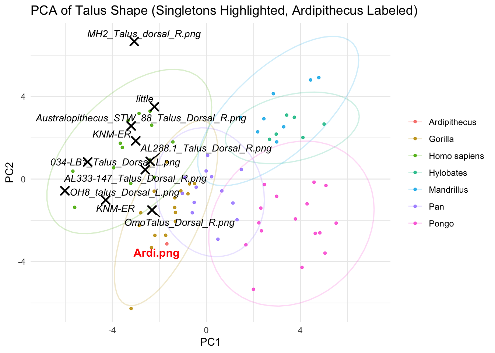
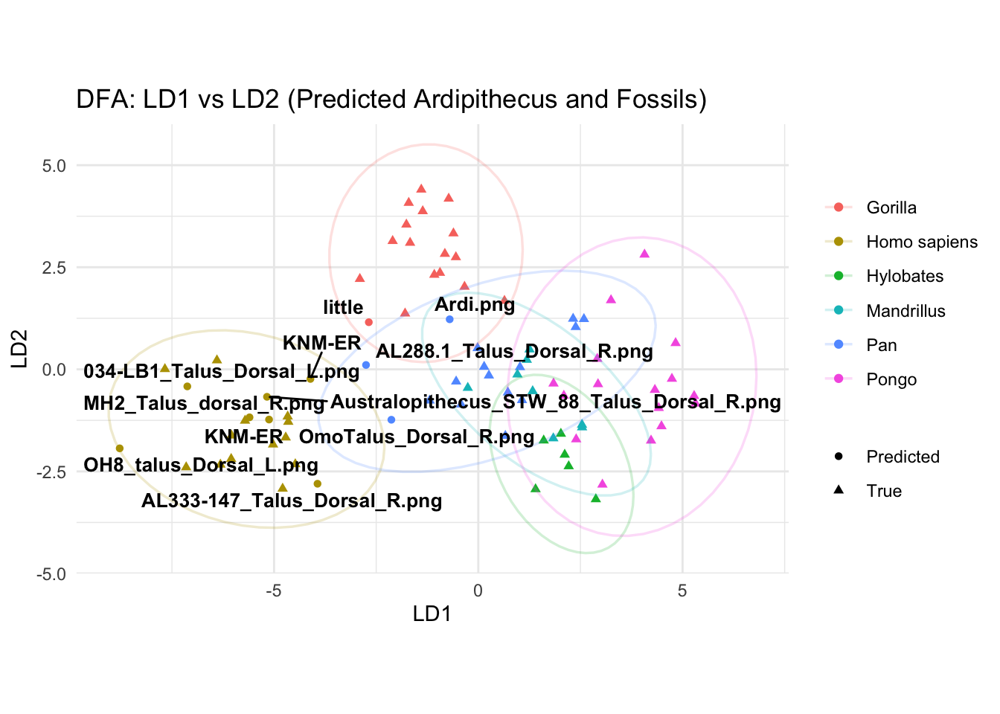
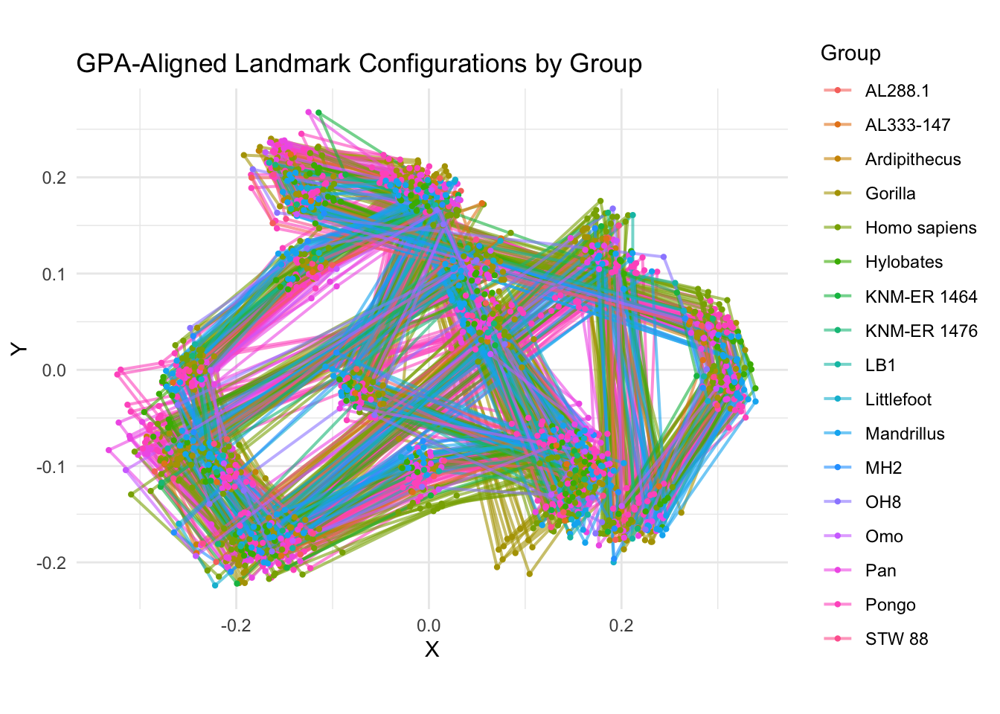
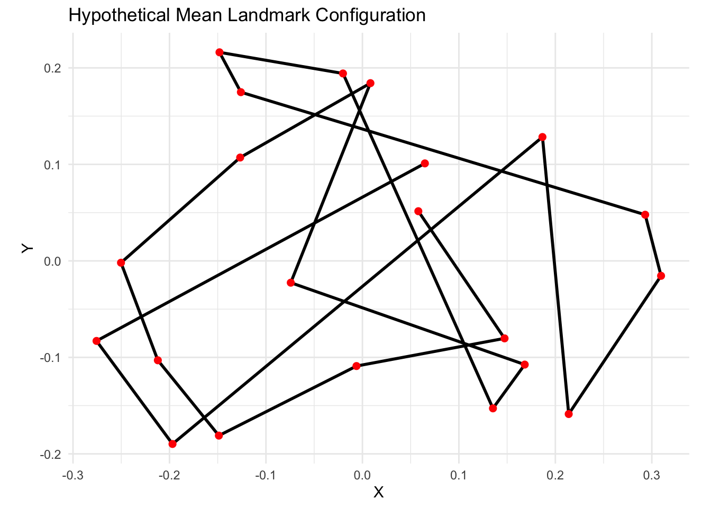
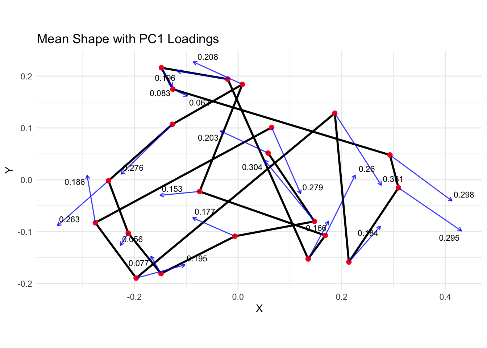
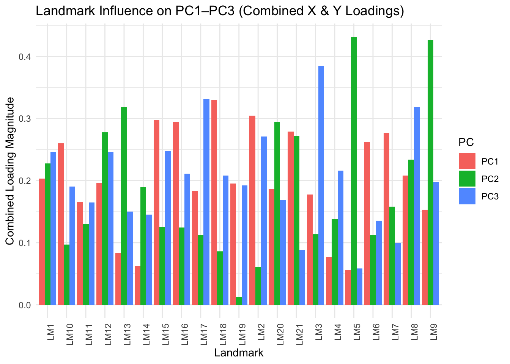

View(raw_data)# Convert to matrix for easier processingraw_matrix <-as.matrix(raw_data)
# Initialize list to store each specimen's landmark matrixlandmark_list <-list()i <-1specimen_counter <-1while (i <nrow(raw_matrix)) {if (!is.na(as.numeric(raw_matrix[i, 1]))) {# Attempt to extract 21 rows of coordinates block <- raw_matrix[i:(i+20), 1:2]if (all(!is.na(block))) { landmark_list[[specimen_counter]] <-as.matrix(apply(block, 2, as.numeric)) specimen_counter <- specimen_counter +1 i <- i +25# Skip landmark rows + metadata + blank line } else { i <- i +1 } } else { i <- i +1 }}
Warning: NAs introduced by coercion
Warning: NAs introduced by coercion
Warning: NAs introduced by coercion
Warning: NAs introduced by coercion
Warning: NAs introduced by coercion
Warning: NAs introduced by coercion
Warning: NAs introduced by coercion
# Convert list to 3D array (p x k x n)coords_array <-array(NA, dim =c(21, 2, length(landmark_list)))for (j in1:length(landmark_list)) { coords_array[,,j] <- landmark_list[[j]]}# Group bygroup <-as.factor(c("Ardipithecus","Gorilla","Gorilla","Gorilla","Gorilla","Gorilla","Gorilla","Gorilla","Gorilla","Gorilla","Gorilla","Gorilla","Gorilla","Gorilla","Gorilla","Gorilla","Gorilla","Pan","Pan","Pan","Pan","Pan","Pan","Pan","Pan","Pan","Pan","Pan","Pan","Pan","Pongo","Pongo","Pongo","Pongo","Pongo","Pongo","Pongo","Pongo","Pongo","Pongo","Pongo","Pongo","Pongo","Pongo","Pongo","Pongo","Homo sapiens","Homo sapiens","Homo sapiens","Homo sapiens","Homo sapiens","Homo sapiens","Homo sapiens","Homo sapiens","Homo sapiens","Homo sapiens","Homo sapiens","Homo sapiens","Homo sapiens","Hylobates","Hylobates","Hylobates","Hylobates","Hylobates","Hylobates","Mandrillus","Mandrillus","Mandrillus","Mandrillus","Mandrillus","Mandrillus","Mandrillus","Mandrillus","LB1","AL288.1","AL333-147","STW 88","KNM-ER 1464","KNM-ER 1476","Littlefoot","MH2","OH8","Omo"))#Create Side Vectorside_vector <-c("L","L","L","L","L","L","L","R","L","R","L","L","L","R","R","R","R","L","L","L","L","R","L","L","L","R","R","L","L","L","R","R","R","R","R","R","R","L","R","L","L","R","R","L","L","L","L","L","L","L","L","L","L","L","L","L","L","L","R","L","R","R","L","L","R","L","L","R","L","L","R","R","L","L","R","R","R","R","L","L","R","L","R")# Flip right-sided specimens (reflect X coordinates)coords_flipped <- coords_array # make a copy to modifyfor (i in1:dim(coords_array)[3]) {if (side_vector[i] =="R") { coords_flipped[,1,i] <--coords_array[,1,i] # Flip X only }}# Now coords_flipped has all shapes oriented as left-sided
#PCA
# Run GPA and PCA on flipped datagpa <-gpagen(coords_flipped)
# Plot with ggplot2pca_df <-data.frame(pca$x,Group = group) # group vector as before# Extract IMAGE= lines from raw dataids <-c()for (i in1:nrow(raw_data)) { val <- raw_data[i, 1]if (!is.na(val) &&str_starts(as.character(val), "IMAGE=")) { id <-str_remove(as.character(val), "IMAGE=") ids <-c(ids, id) }}#add ID's for PCApca_df$ID <- ids
# Clean the PCA datapca_df <- pca_df %>%filter(!is.na(Group), !is.na(PC1), !is.na(PC2)) %>%mutate(Group =droplevels(factor(Group)))# Identify singleton groups (excluding Ardipithecus)singleton_df <- pca_df %>%group_by(Group) %>%filter(n() ==1& Group !="Ardipithecus") %>%ungroup()# Non-singleton or Ardipithecus specimensnonsingleton_df <- pca_df %>%filter(!(ID %in% singleton_df$ID))
#Plot PCA
# Plotggplot() +# Non-singletons and Ardipithecus: group-coloredgeom_point(data = nonsingleton_df, aes(x = PC1, y = PC2, color = Group), size =1, alpha =0.85) +# Ellipses only for groups with >1 specimenstat_ellipse(data = nonsingleton_df, aes(x = PC1, y = PC2, group = Group, color = Group),type ="norm", linetype ="solid", linewidth =0.6, alpha =0.2) +# Singleton specimens (excluding Ardipithecus): black Xgeom_point(data = singleton_df, aes(x = PC1, y = PC2), color ="black", shape =4, size =3, stroke =1.2) +# Label Ardipithecus (bold)geom_text_repel(data =filter(pca_df, Group =="Ardipithecus"), aes(x = PC1, y = PC2, label = ID), color ="red", fontface ="bold", size =4) +# Label remaining singletons (italic)geom_text_repel(data = singleton_df,aes(x = PC1, y = PC2, label = ID),color ="black", fontface ="italic", size =3.5) +labs(title ="PCA of Talus Shape (Singletons Highlighted, Ardipithecus Labeled)",x ="PC1", y ="PC2") +theme_minimal() +theme(legend.title =element_blank())
Too few points to calculate an ellipse
Warning: Removed 1 row containing missing values or values outside the scale range
(`geom_path()`).

#DFA
library(MASS)
Attaching package: 'MASS'
The following object is masked from 'package:dplyr':
select
library(dplyr)# Step 1: Identify singleton groups and Ardipithecussingleton_ids <- pca_df %>%group_by(Group) %>%filter(n() ==1& Group !="Ardipithecus") %>%pull(ID)ardi_ids <- pca_df %>%filter(Group =="Ardipithecus") %>%pull(ID)# Combine those to be predictedto_predict_ids <-c(singleton_ids, ardi_ids)# Step 2: Split data into training (non-singleton, non-Ardi) and testing (Ardi + singletons)train_df <- pca_df %>%filter(!(ID %in% to_predict_ids))test_df <- pca_df %>%filter(ID %in% to_predict_ids)# Step 3: Choose top PCs (e.g., PC1 to PC5)train_data <- train_df %>% dplyr::select(Group, PC1, PC2, PC3, PC4, PC5)test_data <- test_df %>% dplyr::select(PC1, PC2, PC3, PC4, PC5)# Step 4: Fit DFA modeldfa_model <-lda(Group ~ ., data = train_data)
Warning in lda.default(x, grouping, ...): groups AL288.1 AL333-147 Ardipithecus
KNM-ER 1464 KNM-ER 1476 LB1 Littlefoot MH2 OH8 Omo STW 88 are empty
# Step 5: Predict group membership for Ardi + singletonsdfa_pred <-predict(dfa_model, newdata = test_data)# Step 6: Add predicted groups to full datapca_df$PredictedGroup <- pca_df$Group # start by assuming true grouppca_df$PredictionType <-"True"# label how each group was assigned# Replace predicted group labels for Ardi + singletonspca_df$PredictedGroup[pca_df$ID %in% to_predict_ids] <- dfa_pred$classpca_df$PredictionType[pca_df$ID %in% to_predict_ids] <-"Predicted"# Step 7: View predictionspredictions <- pca_df %>%filter(PredictionType =="Predicted") %>% dplyr::select(ID, Group, PredictedGroup)print(predictions)
ID Group PredictedGroup
1 Ardi.png Ardipithecus Pan
74 034-LB1_Talus_Dorsal_L.png LB1 Homo sapiens
75 AL288.1_Talus_Dorsal_R.png AL288.1 Pan
76 AL333-147_Talus_Dorsal_R.png AL333-147 Homo sapiens
77 Australopithecus_STW_88_Talus_Dorsal_R.png STW 88 Homo sapiens
78 KNM-ER KNM-ER 1464 Homo sapiens
79 KNM-ER KNM-ER 1476 Homo sapiens
80 little Littlefoot Gorilla
81 MH2_Talus_dorsal_R.png MH2 Homo sapiens
82 OH8_talus_Dorsal_L.png OH8 Homo sapiens
83 OmoTalus_Dorsal_R.png Omo Pan
#Plot DFA
# Step 1: Get DFA projection (LD scores)dfa_projection <-as.data.frame(predict(dfa_model)$x)dfa_projection$ID <- train_df$ID # IDs for training specimensdfa_projection$Group <- train_df$Groupdfa_projection$PredictionType <-"True"# Step 2: Project test specimens (Ardi + singletons) into DFA spacedfa_test_projection <-as.data.frame(predict(dfa_model, newdata = test_data)$x)dfa_test_projection$ID <- test_df$IDdfa_test_projection$Group <- dfa_pred$class # use predicted groupsdfa_test_projection$PredictionType <-"Predicted"# Step 3: Combine for plottingdfa_plot_df <-rbind(dfa_projection, dfa_test_projection)# Step 4: Plotlibrary(ggrepel)# Identify Ardipithecus + singleton IDsardi_ids <- pca_df %>%filter(Group =="Ardipithecus") %>%pull(ID)singleton_ids <- pca_df %>%group_by(Group) %>%filter(n() ==1& Group !="Ardipithecus") %>%pull(ID)# Combine labels to applylabel_ids <-c(ardi_ids, singleton_ids)# Plot with labelsggplot(dfa_plot_df, aes(x = LD1, y = LD2, color = Group, shape = PredictionType)) +geom_point(aes(fill = Group)) +stat_ellipse(data = dfa_plot_df, aes(x = LD1, y = LD2, group = Group, color = Group),type ="norm", linetype ="solid", linewidth =0.6, alpha =0.2) +# Label Ardipithecus + singletonsgeom_text_repel(data = dfa_plot_df %>%filter(ID %in% label_ids),aes(label = ID),color ="black",size =3.5,fontface ="bold" ) +scale_fill_manual(values=palette()) +labs(title ="DFA: LD1 vs LD2 (Predicted Ardipithecus and Fossils)",x ="LD1", y ="LD2", shape ="Type") +coord_equal() +theme_minimal() +theme(legend.title =element_blank())
Warning: The following aesthetics were dropped during statistical transformation: shape.
ℹ This can happen when ggplot fails to infer the correct grouping structure in
the data.
ℹ Did you forget to specify a `group` aesthetic or to convert a numerical
variable into a factor?

#View Landmarks in a plot
library(tidyverse)library(geomorph)# Step 1: Extract dimensionsn_landmarks <-dim(gpa$coords)[1]n_specimens <-dim(gpa$coords)[3]# Step 2: Build long-format data frame for plottingcoords_list <-lapply(1:n_specimens, function(i) { coords <- gpa$coords[,,i] df <-as.data.frame(coords)colnames(df) <-c("X", "Y") # name the columns properly df$Landmark <-1:n_landmarks df$Specimen <- i df$Group <- group[i]return(df)})land_df <-bind_rows(coords_list)# Step 3: Plot with ggplot2ggplot(land_df, aes(x = X, y = Y, group = Specimen, color = Group)) +geom_path(alpha =0.6, linewidth =0.7) +geom_point(size =0.8) +coord_equal() +theme_minimal() +labs(title ="GPA-Aligned Landmark Configurations by Group",x ="X", y ="Y")

#Mean landmarks
# Step 1: Extract consensus shape from GPAmean_shape <-as.data.frame(gpa$consensus)colnames(mean_shape) <-c("X", "Y")mean_shape$Landmark <-1:nrow(mean_shape)# Step 2: Plotggplot(mean_shape, aes(x = X, y = Y)) +geom_path(color ="black", linewidth =1) +geom_point(size =2, color ="red") +coord_equal() +theme_minimal() +labs(title ="Hypothetical Mean Landmark Configuration",x ="X", y ="Y")

#Mean Landmarks plus average s/d
# Step 1: Get the mean shapemean_shape <-as.data.frame(gpa$consensus)colnames(mean_shape) <-c("X", "Y")mean_shape$Landmark <-1:nrow(mean_shape)# Step 2: Calculate standard deviation at each landmark# Loop through each landmark and compute SD of X and Y across specimensvariation_df <-data.frame()for (i in1:nrow(mean_shape)) { x_vals <- gpa$coords[i, 1, ] y_vals <- gpa$coords[i, 2, ] variation_df <-rbind(variation_df, data.frame(Landmark = i,SD_X =sd(x_vals),SD_Y =sd(y_vals) ))}# Step 3: Merge with mean shape to get start + vector lengthmean_shape <-left_join(mean_shape, variation_df, by ="Landmark")# Step 4: Plot mean shape with variation vectorsggplot(mean_shape, aes(x = X, y = Y)) +geom_path(color ="black", linewidth =1) +geom_point(size =2, color ="red") +geom_segment(aes(xend = X + SD_X, yend = Y + SD_Y),arrow =arrow(length =unit(0.15, "cm")),color ="blue", alpha =0.7) +coord_equal() +theme_minimal() +labs(title ="Mean Landmark Configuration with Variation Vectors",x ="X", y ="Y")
#Mean Landmarks and their PC1 Loadings
# Step 1: Extract mean shapemean_shape <-as.data.frame(gpa$consensus)colnames(mean_shape) <-c("X", "Y")mean_shape$Landmark <-1:nrow(mean_shape)# Step 2: Extract PC1 loadingspc1_vector <- pca$rotation[, 1]# Step 3: Assign X and Y loadings per landmarkpc1_loadings <-data.frame(Landmark =1:nrow(mean_shape),LD_X = pc1_vector[seq(1, length(pc1_vector), by =2)],LD_Y = pc1_vector[seq(2, length(pc1_vector), by =2)])# Step 4: Calculate magnitude and scaled vectorspc1_loadings <- pc1_loadings %>%mutate(magnitude =sqrt(LD_X^2+ LD_Y^2),LD_X = LD_X / magnitude,LD_Y = LD_Y / magnitude,scaled_X = LD_X * magnitude *0.5,scaled_Y = LD_Y * magnitude *0.5,label =round(magnitude, 3) )# Step 5: Merge with mean shapemean_shape <-left_join(mean_shape, pc1_loadings, by ="Landmark")# Step 6: Plot with labelsggplot(mean_shape, aes(x = X, y = Y)) +geom_path(color ="black", linewidth =1) +geom_point(size =2, color ="red") +geom_segment(aes(xend = X + scaled_X, yend = Y + scaled_Y),arrow =arrow(length =unit(0.15, "cm")),color ="blue", alpha =0.8 ) + ggrepel::geom_text_repel(aes(x = X + scaled_X, y = Y + scaled_Y, label = label),size =3,color ="black",box.padding =0.2 ) +coord_equal() +theme_minimal() +labs(title ="Mean Shape with PC1 Loadings",x ="X", y ="Y" )

#PCA Loadings
# Step 1: Extract loadings for PC1–PC3loadings <-as.data.frame(pca$rotation[, 1:3])colnames(loadings) <-c("PC1", "PC2", "PC3")# Step 2: Compute magnitude of XY loadings for each landmarkn_landmarks <-nrow(loadings) /2landmark_ids <-1:n_landmarks# Combine X and Y loading magnitudes per landmarklandmark_loadings <-data.frame(Landmark = landmark_ids,PC1 =sqrt(loadings$PC1[seq(1, nrow(loadings), by =2)]^2+ loadings$PC1[seq(2, nrow(loadings), by =2)]^2),PC2 =sqrt(loadings$PC2[seq(1, nrow(loadings), by =2)]^2+ loadings$PC2[seq(2, nrow(loadings), by =2)]^2),PC3 =sqrt(loadings$PC3[seq(1, nrow(loadings), by =2)]^2+ loadings$PC3[seq(2, nrow(loadings), by =2)]^2))# Step 3: Pivot to long formatlong_landmark_loadings <- landmark_loadings %>%pivot_longer(cols =c(PC1, PC2, PC3), names_to ="PC", values_to ="Loading") %>%mutate(Landmark =paste0("LM", Landmark))# Step 4: Plotggplot(long_landmark_loadings, aes(x = Landmark, y = Loading, fill = PC)) +geom_col(position ="dodge") +theme_minimal() +labs(title ="Landmark Influence on PC1–PC3 (Combined X & Y Loadings)",x ="Landmark",y ="Combined Loading Magnitude") +theme(axis.text.x =element_text(angle =90, hjust =1))

# Step 1: Extract loadings from PCAloadings <-as.data.frame(pca$rotation[, 1:4]) # PC1 to PC4n_landmarks <-nrow(loadings) /2# Step 2: Calculate combined loading (magnitude of X and Y) for each landmark per PClandmark_loadings <-data.frame(Landmark =paste0("LM", 1:n_landmarks),PC1 =sqrt(loadings$PC1[seq(1, nrow(loadings), 2)]^2+ loadings$PC1[seq(2, nrow(loadings), 2)]^2),PC2 =sqrt(loadings$PC2[seq(1, nrow(loadings), 2)]^2+ loadings$PC2[seq(2, nrow(loadings), 2)]^2),PC3 =sqrt(loadings$PC3[seq(1, nrow(loadings), 2)]^2+ loadings$PC3[seq(2, nrow(loadings), 2)]^2),PC4 =sqrt(loadings$PC4[seq(1, nrow(loadings), 2)]^2+ loadings$PC4[seq(2, nrow(loadings), 2)]^2))# Step 3: View or export the resultprint(landmark_loadings)